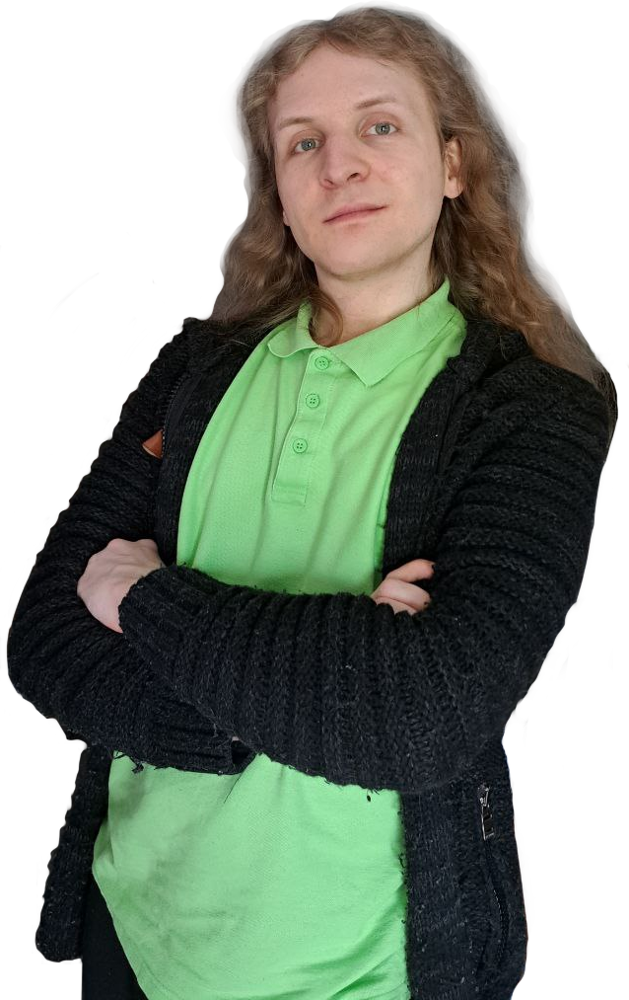
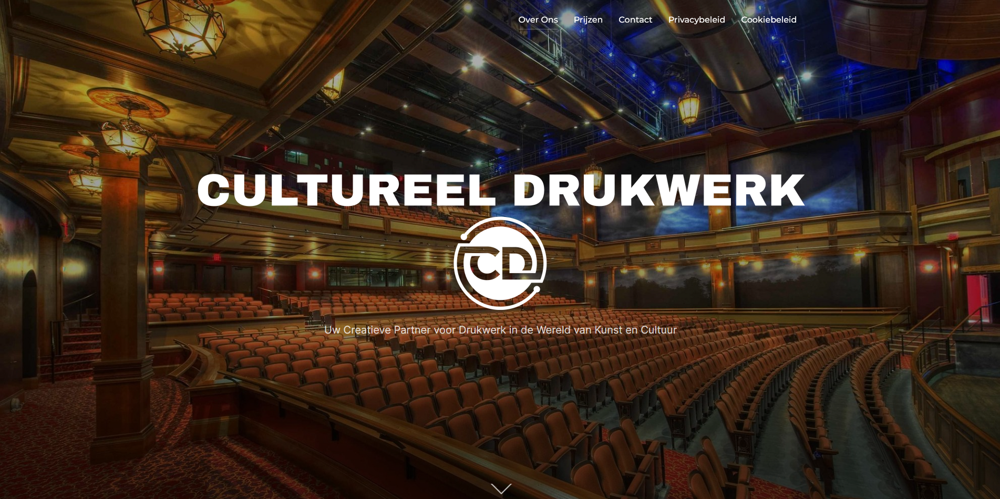
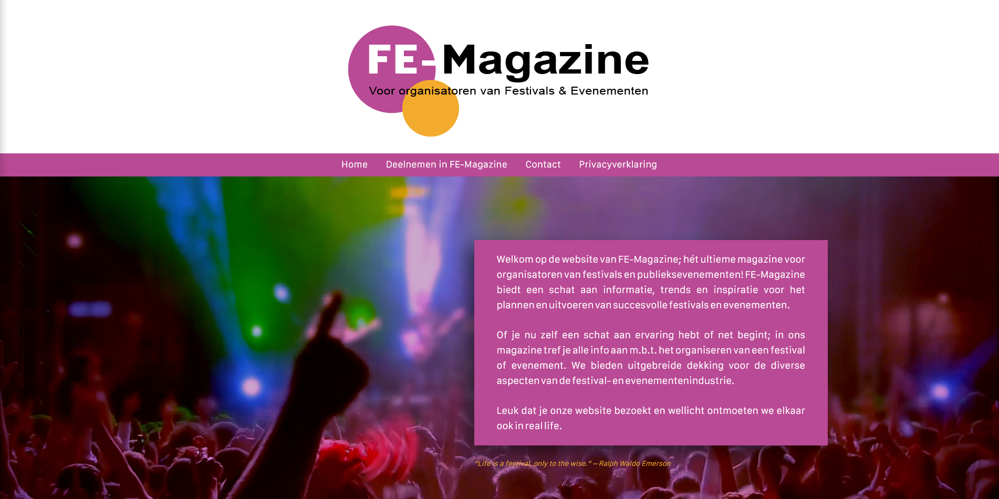
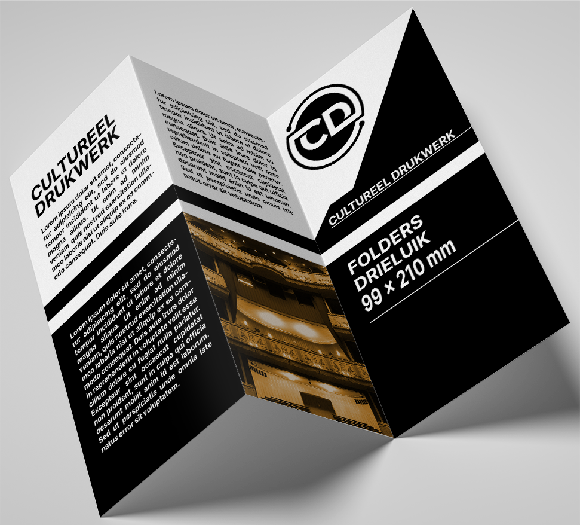
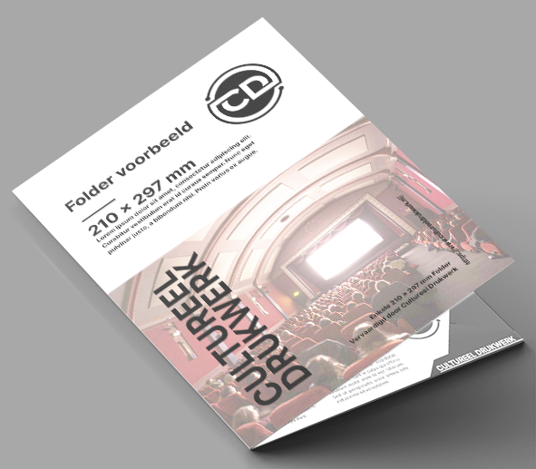
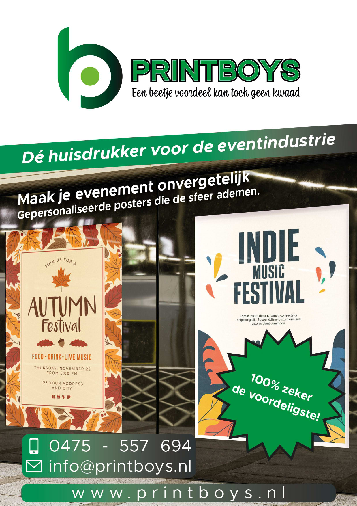
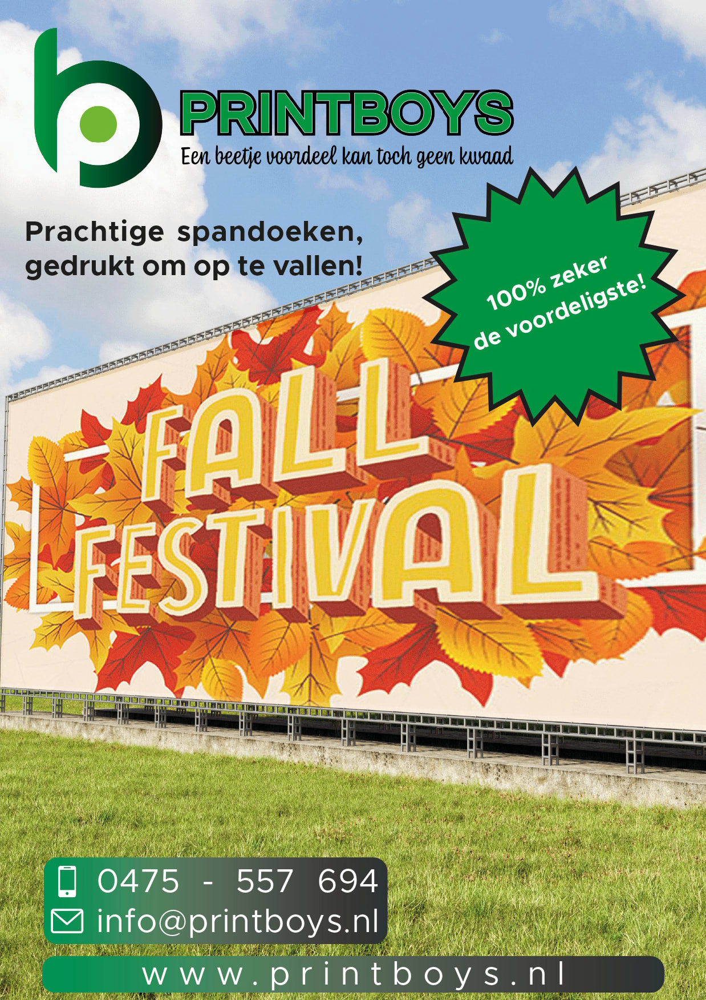
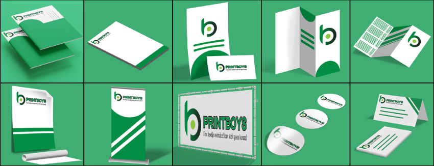

Patricia Szarota
Gedreven | Betrouwbaar | Vastberaden
Vanaf dag één een creatieve ziel, met een aangeboren affiniteit voor technologie. Mijn leven lang ben ik gefascineerd door het vermogen van media om mensen te raken, en heb ik me ondergedompeld in de wereld van digitale expressie, waarin ik een ware passie heb gevonden.Door de jaren heen heb ik met verschillende softwarepakketten gewerkt, van illustratie tot videobewerking en het ontwerpen van websites en afbeeldingen. Het is een reis geweest die mijn passie alleen maar heeft aangewakkerd. Nu ben ik op zoek naar kansen om mijn expertise professioneel in te zetten, om samen te werken aan projecten die de grenzen van creatieve expressie verleggen.
Dit portfolio biedt een inkijkje in mijn recente werk, waarin ik mijn vaardigheden en ervaring in mediavormgeving tentoonspreid. Elk project vertelt een verhaal, van grafisch ontwerp tot webdesign. Benieuwd naar meer? Laten we samen de volgende creatieve reis beginnen.

Bedreven in het werken met:

Illustrator

Photoshop

InDesign

Premiere
Illustrator
Photoshop
InDesign
Premiere
Cultureel Drukwerk
Cultureel Drukwerk is een kwaliteitsgerichte "hands-on" drukkerij met een nadruk op de culturele sector.


Een eenvoudige website gebouwd voor FE-Magazine, een tijdschrift voor de organisatoren van festivals & evenementen, met het doel om deze organisatoren de mogelijkheid te geven om eenvoudig contact te leggen met FE-Magazine.
Een informatief reclamespotje voor de jaargids van Vergaderadres, een adverteerder van vergaderlocaties gericht op allerlij soorten bedrijven & instanties in Nederland.
Een kort-maar-krachtige aankondiging van het nieuwste exemplaar van PV-Magazine.




